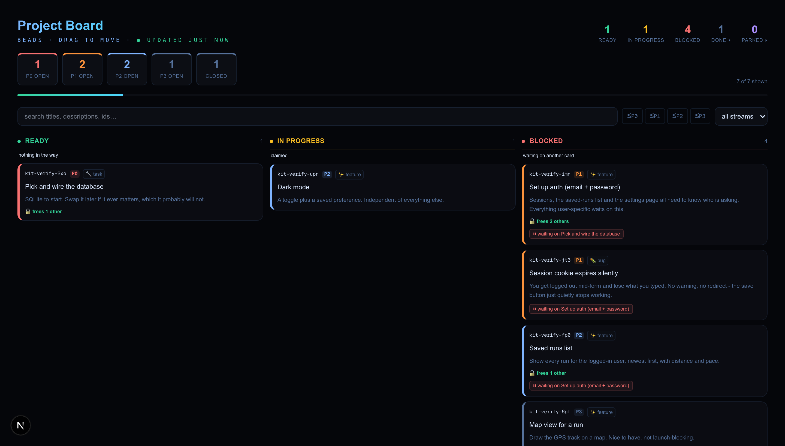
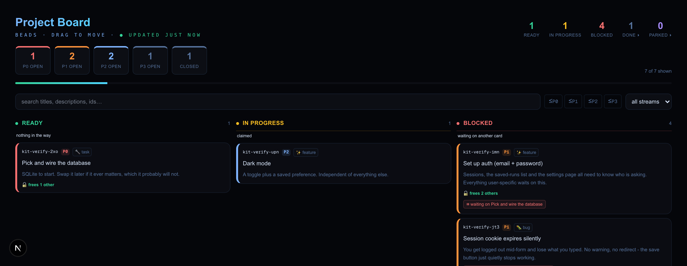
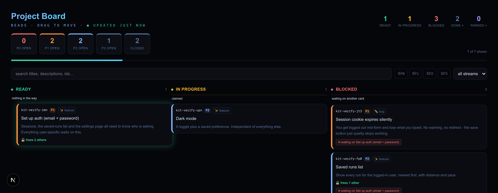

You never mark anything “blocked” yourself. You just say which card needs which — and the board works out what you can actually start right now, every time it loads. Finish something, and whatever it was holding up moves itself.

Finish the thing that was in the way — from the terminal, from another window, from an agent running in the background — and the card that was stuck behind it slides into Ready on its own, a second or two later. You don’t refresh anything. You don’t update a second list.


$ bd close <the-blocker-id> -r "SQLite wired, verified by reading a row back."
Then look at what landed: the card that appeared is badged frees 2 others. It is worth more than the one you just finished. That's leverage, and it's invisible in a flat list.
Three properties, and the first one is why the rest work.
You never tick a “blocked” box, because nobody remembers to. The board recalculates what’s startable every single time it loads.
An agent puts its name on a card before it touches any code, so two of them can’t quietly start the same job and edit the same files.
Closing a card makes you write what changed and how you checked. A wall of “done” with no reasons is worth nothing three weeks later.
Only two of these are real statuses you set. The other two the board figures out for you — and they’re the two you care about.
| Column | Comes from | Who decides it |
|---|---|---|
| Ready | nothing is in its way | the board |
| In Progress | you (or an agent) claimed it | you |
| Blocked | it’s waiting on another card | the board |
| Done | you closed it, with a reason | you |
Four files into an existing Next.js app. No additional npm packages.
$ brew install beads $ cd your-project && bd init
@/* alias points at the same root the files landed in, or swap the imports for relative paths.
/board. Full setup notes, the gotchas that will bite you, and the tests are in the README.